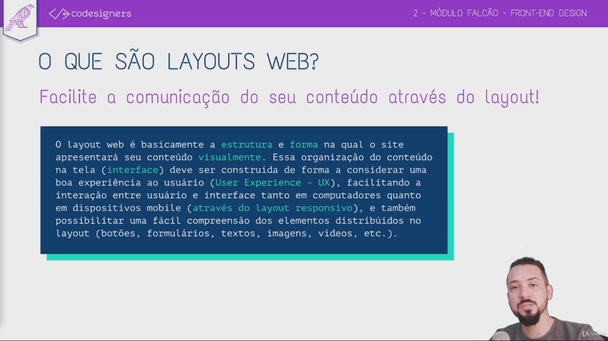

O que são layouts web?

Tipos de layouts
Antes de criarmos grids, temos que saber que tipo é o nosso layout.
- Fixo - Possui medidas fixas para seus elementos de layout, independente da resolução da tela;
- Fluido - Os elementos se redimensionam através de %, porém, sem considerara resolução da tela do dispositivo;
- Responsivo - Os elementos se redimensionam e se agrupam de formas diferentes de acordo coma resolução de tela, fazendo com que a experiência de navegação seja otimizada para cada resolução;
- Orgânico - Não existe uma Grid fixa e os elementos são espalhados de maneira orgânica pelo layout, de modo que cada página possui uma diagramação diferente sem estar limitado à colunas
- Material - Um conceito de layout introduzido pelo Google, onde o conceito principal consiste em explorar o layout base no design de materiais impressos, onde o espaço tridimensional é trabalhado a partir da relação entre luz, sombra e movimento utilizando 3 dimensões (eixos X, Y e Z)